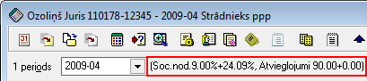
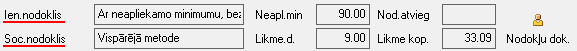
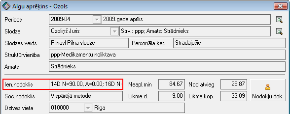

Nodokļu dokumenta datu piemērošana algu aprēķinā¶
Pievienojot slodzes Algu aprēķinu žurnālā , katram strādājošajam (Slodzei ) tiek izveidots algu aprēķins Algu aprēķinu žurnālā , kur atverot aprēķinu ir redzams, kādas nodokļu likmes un atvieglojumi tiek piemēroti strādājošajam:

Ekrāna formā tiek parādīts, ka atvērtajam algu aprēķinam, piemēram, ir noteikts 9.00% sociālais nodoklis darbiniekam, 24.09% darba devēja sociālā nodokļa likme, 90.00Ls tiks piemērots kā neapliekamais minimums un pārējo atvieglojumu kopsumma ir 0.00Ls. Ja blakus periodam neparādās šādi dati, nodokļi un atvieglojumu netiks piemēroti. Lai norādītu piemērojamos nodokļus un atvieglojumus:
1.Jāatver perioda dati
Perioda dati (F4)
2.Jānorāda strādājošā nodokļa dokuments. Nodokļa dokumentā jābūt noteiktām sociālā un ienākuma nodokļa aprēķina metodēm:

Ja strādājošajam mainās Ienākuma nodokļu metode , strādājošo ienākumu nodokļu metožu izmaiņas tiek ņemtas vērā līdzko izmaiņas stājās spēkā (arī aprēķina perioda vidū):
1)Ja strādājošajam mainās ienākuma nodokļu metode, tad sistēmā ir jāievada jauns Nodokļu dokuments , kurā būtu norādīta jaunā metode ar atbilstošu spēkā stāšanās datumu. 2)Ja vienā periodā ir spēkā divi vai vairāki nodokļa dokumenti, tad ienākuma nodokļu atvieglojumi tiek rēķināti proporcionāli perioda kalendāro dienu skaitam, kurā ir spēkā attiecīgais nodokļu dokuments. 3)Iepriekšējie nodokļu dokumenti ir spēkā līdz nākoša nodokļu dokumenta spēkā stāšanās datumam – sistēma automātiski nosaka nodokļu dokumentu pēc tā, kurš ir spēkā attiecīgajā periodā:

Ienākuma nodokļa laukā tiek parādīta informācija, kā veidojās ienākuma nodokļa atvieglojumi.
Kas nozīmē: •14 dienas neapliekamais minimums = 90.00 un Atvieglojumi = 0.00 •16 dienas neapliekamais minimums = 80.00 un Atvieglojumi = 56.00. Summāri par periodu tas dod Neapliekamo minimumu = 84.67 un Atvieglojumus = 29.87
Visiem strādājošajiem nodokļa dokumentu datus var atjaunot noAlgu rīku darba režīma - Algu aprēķins , aktivizējot komandu Atvērtajā periodā salikt jaunāko info no slodzes aprakstiem:
No Perioda dati (F4) loga, nospiežot komandpogu „Nodokļu dok.” iespējams pievienot jaunu vai labot esošo nodokļu dokumentu.
- scale
100%
- scale
100%
- scale
100%
- scale
100%
- scale
100%
- scale
100%